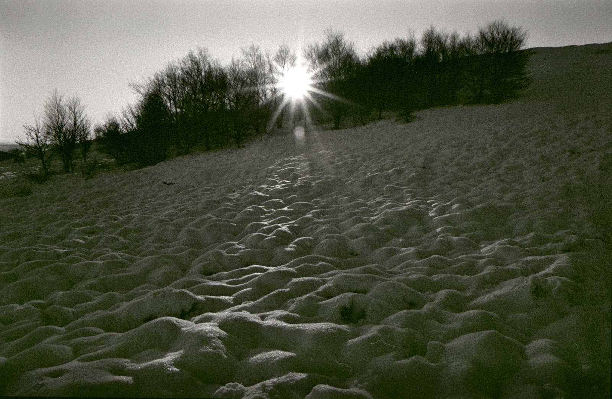
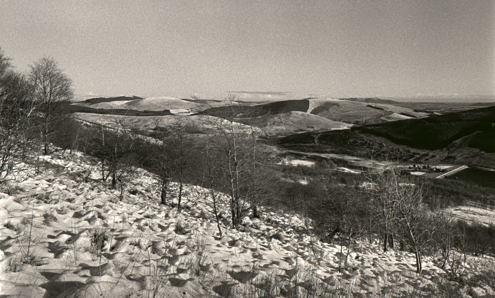
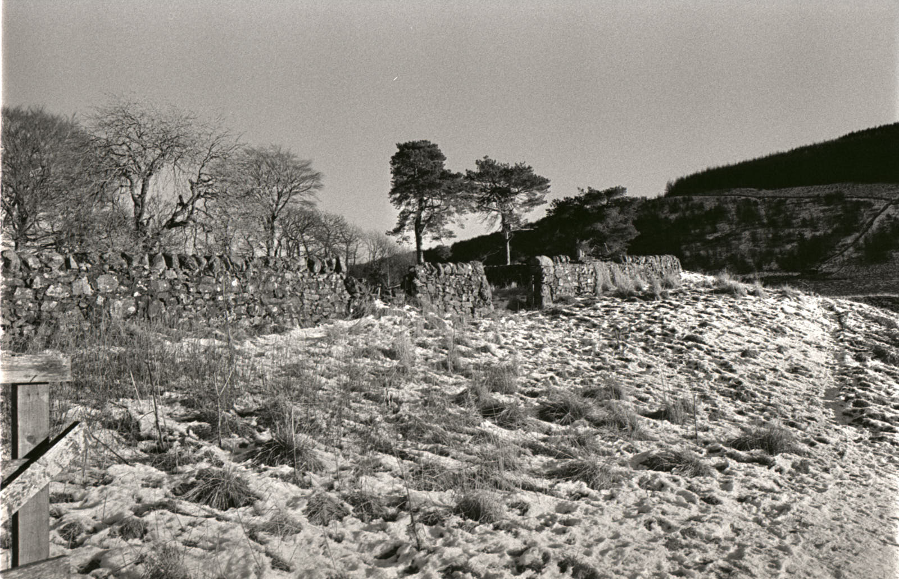
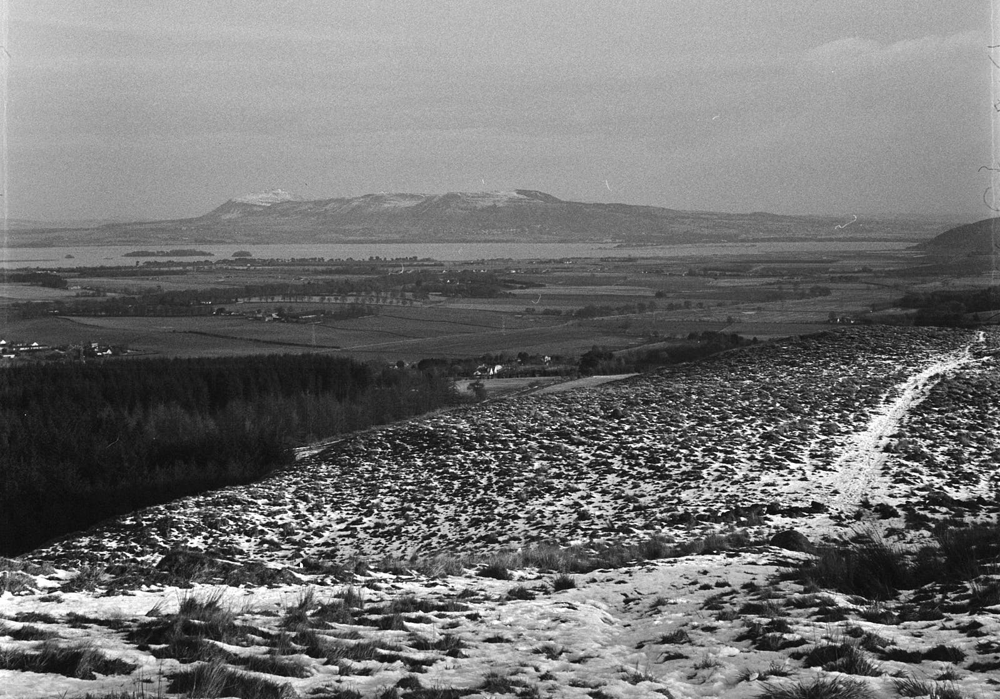
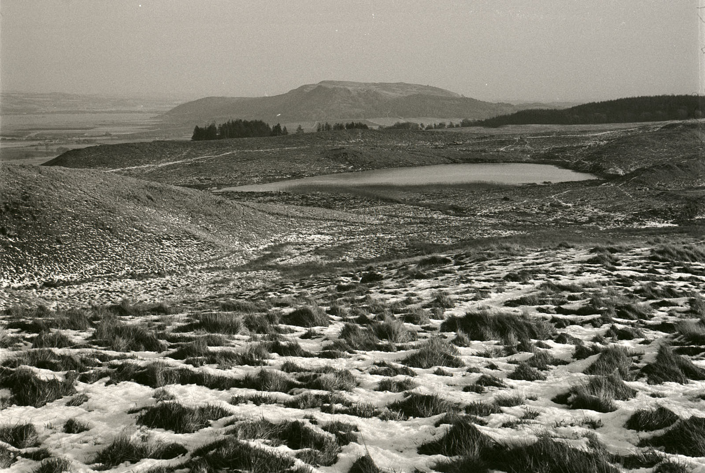

Kodak Tri-X 400TX
Early experience with Kodak’s vintage emulsion in a Nikon FM and an Agfa Isolette medium format folder.

Kodak Tri-X has been around since World War II and has earned a reputation for being flexible in all kinds of applications. I bought some 135 and 120 from Analog Wonderland for £7 and £8 per roll, respectively. The first roll went through my Hassleblad with not too much success and I promised then not to stand develop this film next time.
Well, that’s all well and good but the exposures I made with both my Nikon FM and the Agfa Isolette were “empirical” and in variable light. Because of this, I semi-stand developed these in the hope that the development principle of this method might compensate for variable metering.
 Innerdownie Hill, Nikon FM. Compare with the similar image taken on my Hasselblad.
The first few frames of the roll taken in the Nikon FM were exposed up Innerdownie Hill. I had a No. 8 Yellow filter that ought to have about 2 stops of compensation applied to it, but I stupidly adjusted the ISO on the camera’s meter. Think about it – this camera has TTL or through-the lens metering. That means that the meter reads the light inside the camera after it has passed through the filter. It already compensates for the filter’s attenuation, so you don’t have to. This is one reason why semi-stand development was used for this film: I realised I had blundered on the metering.
 Glenquey reservoir
I’ve learned not to take myself too seriously as a photographer. There are many, many better photographers than me, so I don’t get the rage when things don’t work out, except at myself when I continually fail to learn a lesson. Occasionally, though, I’ll try something I haven’t before, and the top image shows an attempt at “ICM”, or intentional camera movement. This has been used by some artists to convey emotion or a feeling, and I think my version has a sense of what it felt like to be in the woods on that snowy day. I’m pleased with it, anyway: it was consciously done, knowing that it was too dark for a hand-held capture, and that the mossy mound I had chosen for a makeshift tripod was just too mossy to be useful, it was a case of either not taking the photo, or pausing for a moment to connect to the feeling of it. I thought ICM might do it: I think it it did.
 by Glenquey sluice
I scanned these after developing and then pulled them into Capture One for adjustment. Cropping and rotation are first, usually. Cropping, because the negative carrier Epson supplies with the scanner is pretty flimsy and difficult to use. Rotation is often required because I am rubbish at keeping a horizon level (ask anyone who flew with me in the days I had a pilot’s licence). Adjustment is necessary beyond this, because I didn’t let the scanner do anything by way of exposure adjustment or colour rendering – I am hoping that it just scans the negatives into a file containing all of the information in the film and doesn’t try to do any thinking for me.
 Loch Leven
Other adjustments in Capture One include the standard set of looking at the levels and mid-tone contrast, and maybe removing dust specks (I’m not at the white cotton-glove stage of handling my negatives). Here is where I notice persistent problems: in the Nikon, I am noticing metering inconsistencies, or at least errors with extended use in cold weather. Perhaps I have relied heavily on the meter inside this camera too much, which has resulted in some disappointments, this roll included, when ambient light levels are low. If I’m going to have to work in digital post-processing, I might as well shoot digital in the first place.
 Loch Lurg
Some time later, we were down at Pettycur beach for sunset, which came around the same time as high tide. The Isolette came out this time for a few frames, and the Nikon was on a tripod. The final outing to finish the film was back up a local hill for some exercise away from other people. Off the road, we saw nobody that wasn’t on some distant hill.
Notes
| Brand | Type | ISO | Format | Exposures | Camera | Lens |
|---|---|---|---|---|---|---|
| Kodak | Tri-X | 400 | 35mm | 36 | Nikon FM | Nikon AI-s 28mm f/2.8 |
| Kodak | Tri-X | 400 | 120 | 12 | Agfa Isolette I | Agfa Agnar 1:4.5/85 |